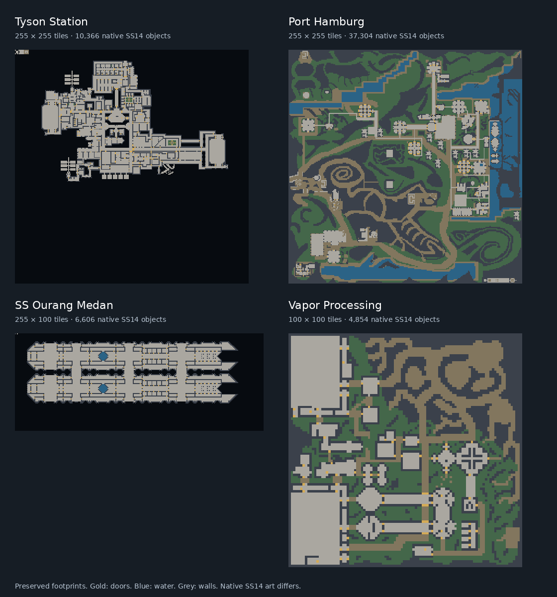

Current result
Tyson Station, Port Hamburg and SS Ourang Medan were restored for current TGMC. Those three and the current upstream Vapor Processing map were converted to native SS14 YAML maps. All four SS14 ports passed native loading, saving, initialization and simulation checks with zero loader, serializer or fatal errors in the final pass.
The SS14 versions support local Sandbox editing and exploration. TGMC missions, xenomorph rules, dropships and full engineering networks still need adaptation. Manual GUI editing, every machine interface and complete multiplayer missions have not been played through.
The four maps
| Map | Source footprint | Native objects | Conversion report |
|---|---|---|---|
| Tyson Station | 255 × 255 | 10,366 | Substitutions, omissions and checksums |
| Port Hamburg | 255 × 255 | 37,304 | Substitutions, omissions and checksums |
| SS Ourang Medan | 255 × 100 | 6,606 | Substitutions, omissions and checksums |
| Vapor Processing | 100 × 100 | 4,854 | Substitutions, omissions and checksums |
One source tile becomes one SS14 tile. Each report records source types, native replacements, omitted objects, added support cells and source/output SHA-256 checksums.

Stage 1: restore the maps for current TGMC
- Preserve the original 2019 fork and its map files before editing. Restore Tyson, Hamburg and Ourang from commit
0561be01eb281e44787e46af55cd0f13478c3e9a. - Use main
tgstation/TerraGov-Marine-Corpsat commitd17228095d2bbc94359acaf7421119a60c672261. Keep its current Vapor layout unchanged. - Compare legacy atom paths and variables against the current compiled type catalogue. Migrate retired paths, access IDs, cable directions, lighting variables and obsolete machinery fields.
- Add current objectives and intelligence markers, weed landmarks and AI navigation appropriate to each restored layout. Preserve disconnected source regions rather than invent connecting bridges.
- Repair invalid generic seeds, pipe layers and overlapping junctions; remove a redundant Tyson pipe and a duplicate Hamburg table. Update Hamburg’s old shuttle console to the current dropship-control subtype. Fix Linux airlock sprite filename case.
- Compile and host each map with portable BYOND 516.1659. Use StrongDMM for map editing and retain original archives separately.
Compilation including all three restored maps completed with zero errors and zero warnings. Each restored map initialized without runtime or plumbing reports. The restored maps and unchanged Vapor baseline each produced the same 18 upstream blank-dock reservation warnings. BYOND login and full missions remain manual checks.
Stage 2: convert DMM layouts to native SS14
- Parse restored DMM cell dictionaries and tile coordinates into source snapshots. Resolve native entity and tile prototypes from the pinned SS14 resource catalogue.
- Translate BYOND’s one-based coordinates to zero-based SS14 tiles. Place entities at tile centers and shift each grid so a clear spawn floor sits at the world origin.
- Write native map format 7: 16 × 16 chunks, seven bytes per tile (
<iBBB), base64 chunk data, native tile IDs and prototype-backed entity groups. - Map floors, walls, doors, furniture, stocked vendors and supported machinery to native counterparts. Preserve separate directional window edges. Record specialized objects without reliable equivalents as omissions.
- Convert pipe connection masks to native straight, bend, T-junction and four-way shapes, including supply/scrubber layers. Express rotations explicitly in radians:
1.5707963267948966 rad. Bare numbers are interpreted as degrees; the tested serializer rejects adegsuffix. Keep prototypes that prohibit rotation at zero. - Place native water over supporting ground tiles. Add lattice under anchored structures in space: 309 cells on Tyson, four on Hamburg and 165 on Ourang. Vacuum remains possible on lattice.
- Supply room-temperature air and gravity. Set APC receivers to
needsPower: falseand clear access requirements for immediate Sandbox interaction. Rebuild real power, atmos and access networks separately. - Add safe job, late-join and observer spawns and local Sandbox station prototypes. Keep the ports outside the public default map pool.
- Load and save each generated map through the native engine, compare tile geometry, entity counts and world positions/rotations, then initialize and run simulation checks.
Native saving can reparent entities, so validation compares their world transforms rather than assuming local coordinates and parent IDs remain unchanged. This catches displaced or rotated objects while accepting legitimate engine serialization.
SS14 source commit: 07c0caa76bf941d2a5ed53b827c0bc25f16eb162. Robust source commit: b8185556b610da84d3f93559bbd7778fdae58811; engine version 292.0.0. Build environment: portable .NET SDK 10.0.401 and runtime 10.0.12.
Editing and local hosting
On the prepared laptop, start SS14 Local Server, then SS14 TGMC Maps. Choose a map and enter its displayed command in the game console (backtick key). Maps load paused for editing.
mapping 1000 Maps/TGMC/Tyson_Station.yml false
mapping 1000 Maps/TGMC/Port_Hamburg.yml false
mapping 1000 Maps/TGMC/SS_Ourang_Medan.yml false
mapping 1000 Maps/TGMC/Vapor_Processing.yml falseChoose one command. Restart between large maps or use a different map number when loading another. F5 opens the entity picker, F6 the tile picker and F7 admin tools.
savemap 1000 my-map-edited.ymlSave under a new filename before simulation. Saves go to Tools/SS14/server-data beneath the laptop’s Data folder. To test a fresh copy, run mapinit 1000 and unpausemap 1000; spawn and possess a human using the admin tools.
For joining a local Sandbox round, start SS14 TGMC Local Game, choose a map, wait for Ready, then start SS14 Map Editor to connect. Both SS14 hosting launchers use loopback port 1212; run one server at a time. TGMC local hosting uses loopback port 14000.
Hamburg contains roughly 37,000 objects and is slowest on this laptop. Begin with Vapor or Ourang, keep one map open and use paused editing.
What was verified
- All four final SS14 maps load, save, initialize and run in the native engine with zero final loader, serializer or fatal errors.
- Native object counts, tile geometry and world positions/rotations match after native save for every port.
- Local station loading succeeded for Vapor, Tyson and Hamburg. Vapor’s client connected and attached to a human character with zero client errors. This client test preceded the final geometry corrections; the corrected final ports were all server-validated.
- The normal mapping launcher reached Ready on the lightweight breathable startup pad without errors. Hosting was confirmed on loopback, and test servers were shut down.
Remaining work: native mission systems, specialized TGMC devices, engineering network redesign, role access design, hands-on machine checks, GUI tile editing, performance tuning and full multiplayer playtests. Native SS14 art supplies the presentation; TGMC gameplay does not transfer automatically.
Detailed validation · Round-trip checksums and results · Corrected final server log
Reproduction, backups and provenance
Conversion source · Native-save verification source · Setup manifest · SS14 start guide
The downloadable scripts document the prepared workspace and require its source snapshots, pinned prototype catalogue and local paths; they are not standalone browser tools. The complete reproduction inputs remain in Tools/SS14/tgmc-port and its local backup. Running the converter overwrites the four generated map filenames. Save manual edits separately first.
The laptop keeps original TGMC maps under Backups/TGMC-original-maps, full upstream history under Backups/TGMC-upstream, and edited maps under Backups/TGMC-map-edits. SS14 map archives under Backups/SS14-maps include generated maps, saved edits, local prototypes, launchers and conversion records. Use SS14 Back Up Maps after editing.
The source maps retain their original project attribution and license requirements. SS14 assets stay in their native resource tree. This documentation bundles process records and layout diagrams; map source archives and native game assets remain in the local development workspaces.